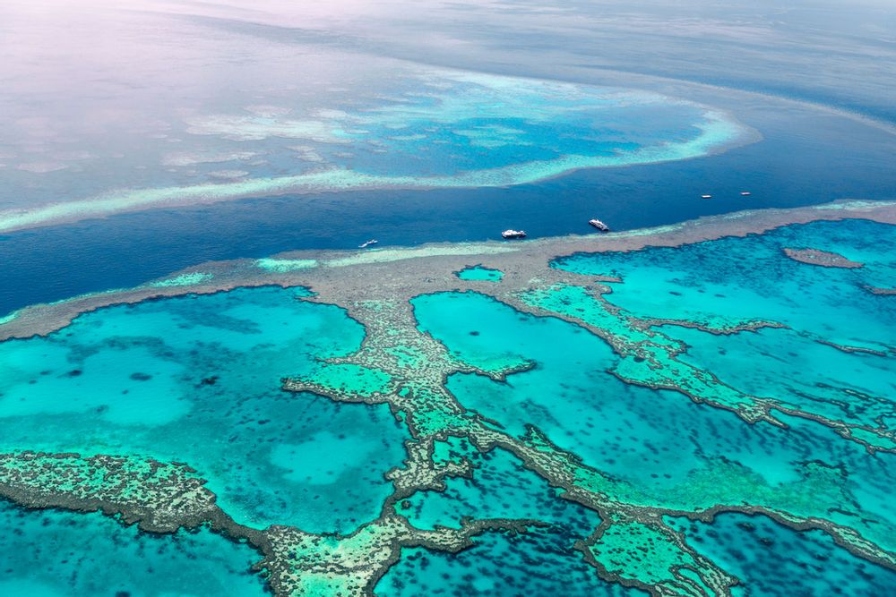
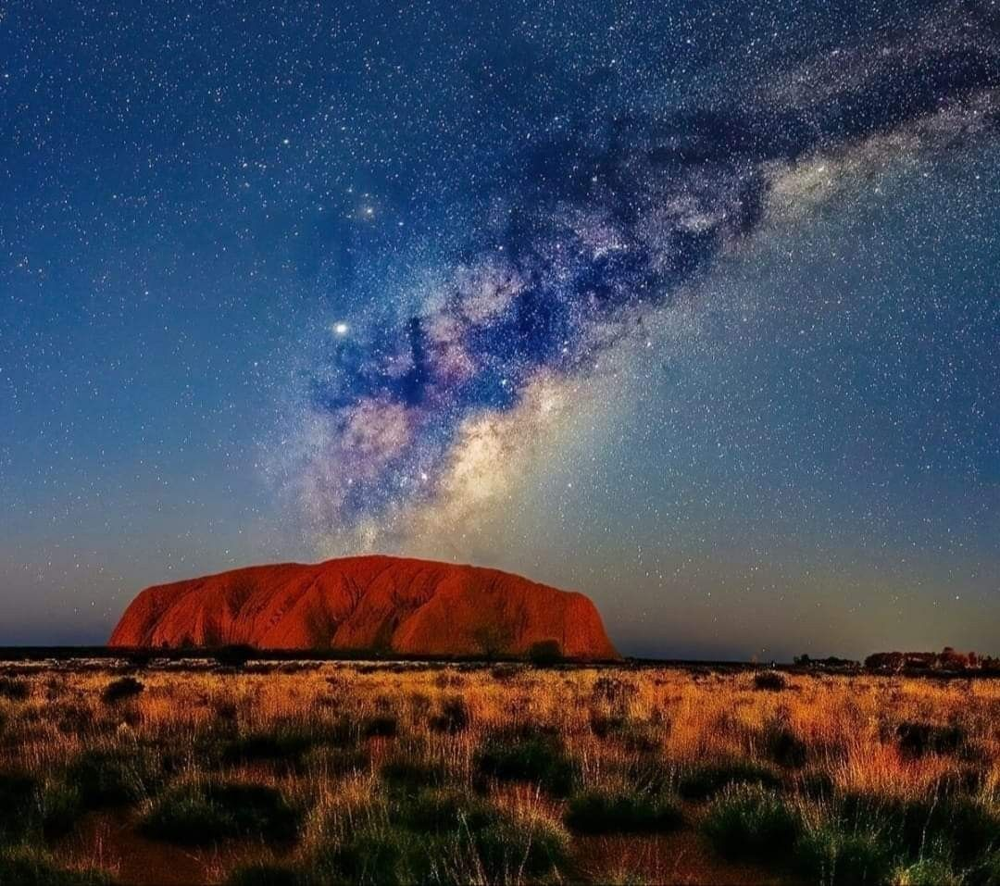

The Great Barrier Reef
Located off the coast of Queensland, the Great Barrier Reef is the world's largest coral reef system and home to a diverse array of marine life. Visitors can explore the reef through snorkeling and scuba diving or take a glass-bottom boat tour to see the colorful corals and fish.

Uluru-Kata Tjuta
Located in the heart of Australia's Red Centre, Uluru-Kata Tjuta National Park is home to the iconic Uluru rock formation, also known as Ayers Rock. Visitors can hike around the base of Uluru and witness the stunning sunsets and sunrises over the desert landscape. The park also features the 36 domes of Kata Tjuta (also known as the Olgas), which offer another stunning natural landscape.

Sydney Opera House
One of the most recognizable buildings in the world, the Sydney Opera House is a UNESCO World Heritage Site located in Sydney Harbour. Visitors can take a tour of the opera house to learn about its history and architecture, or attend a performance of the Sydney Symphony Orchestra or the Australian Ballet.